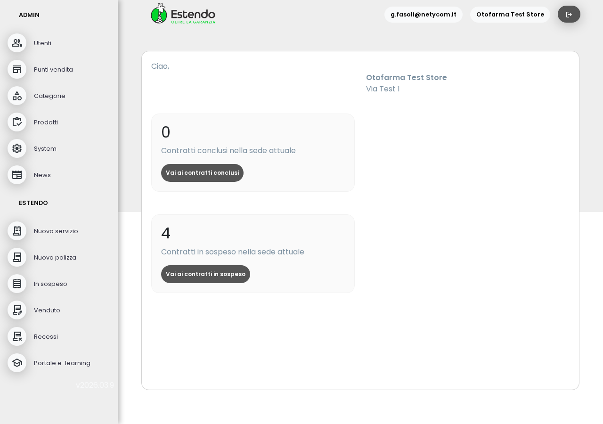
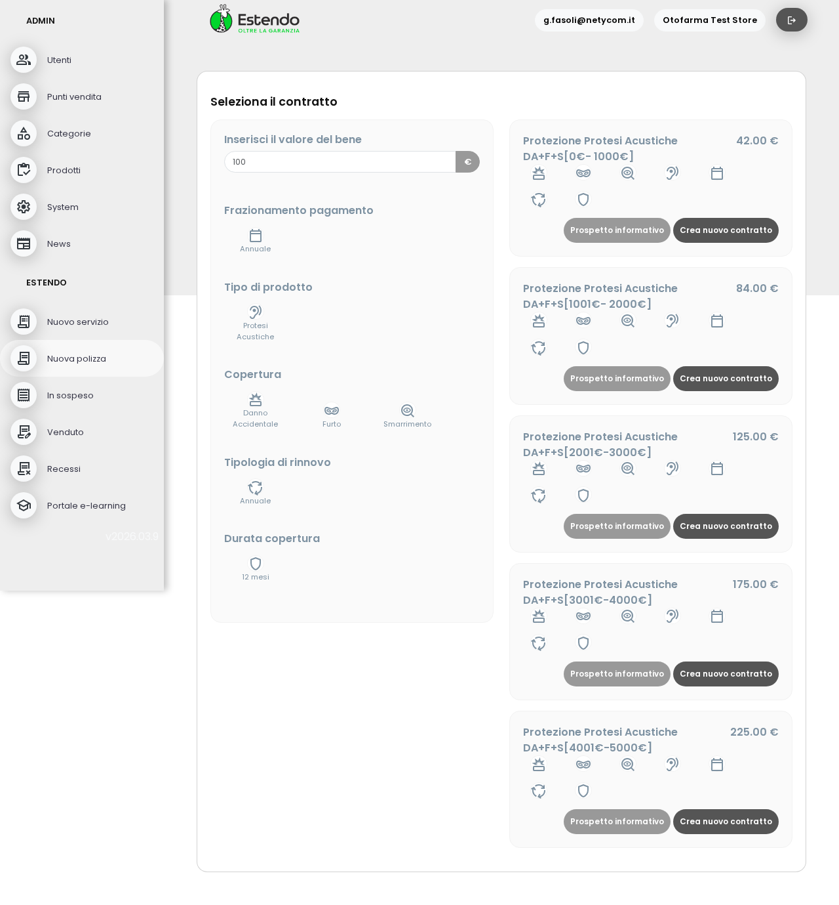
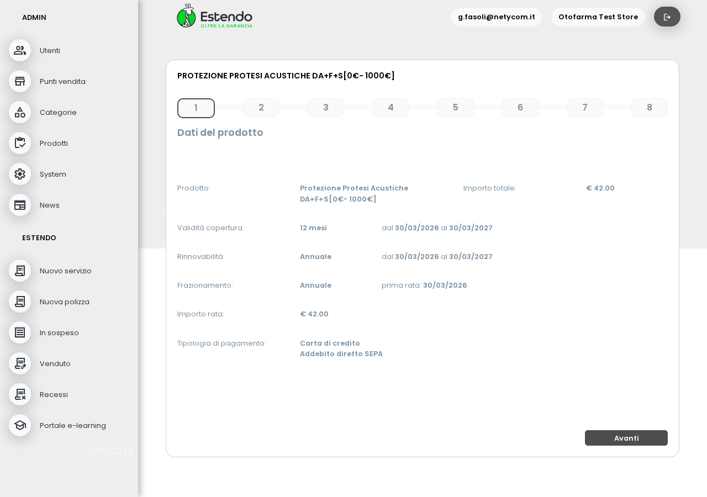
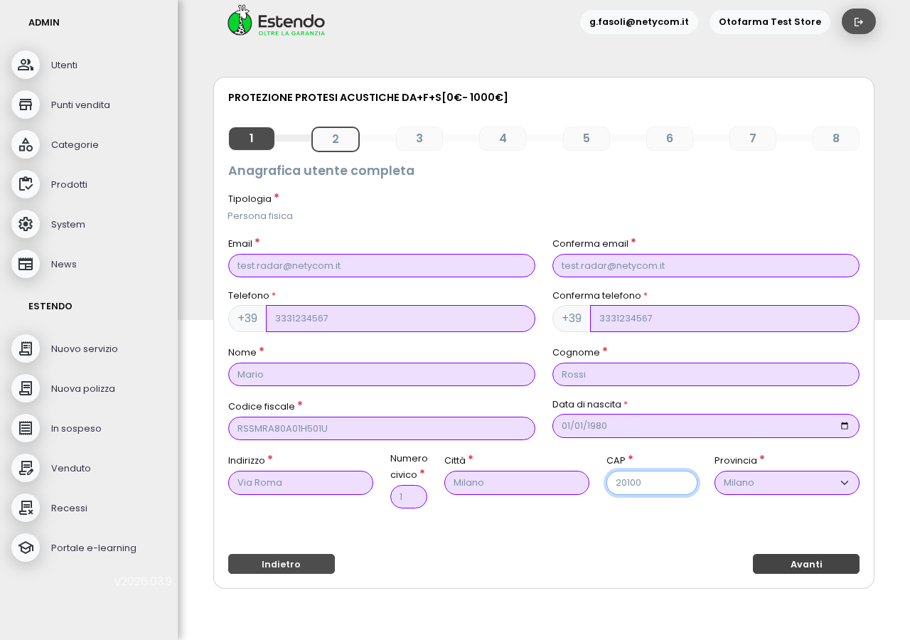
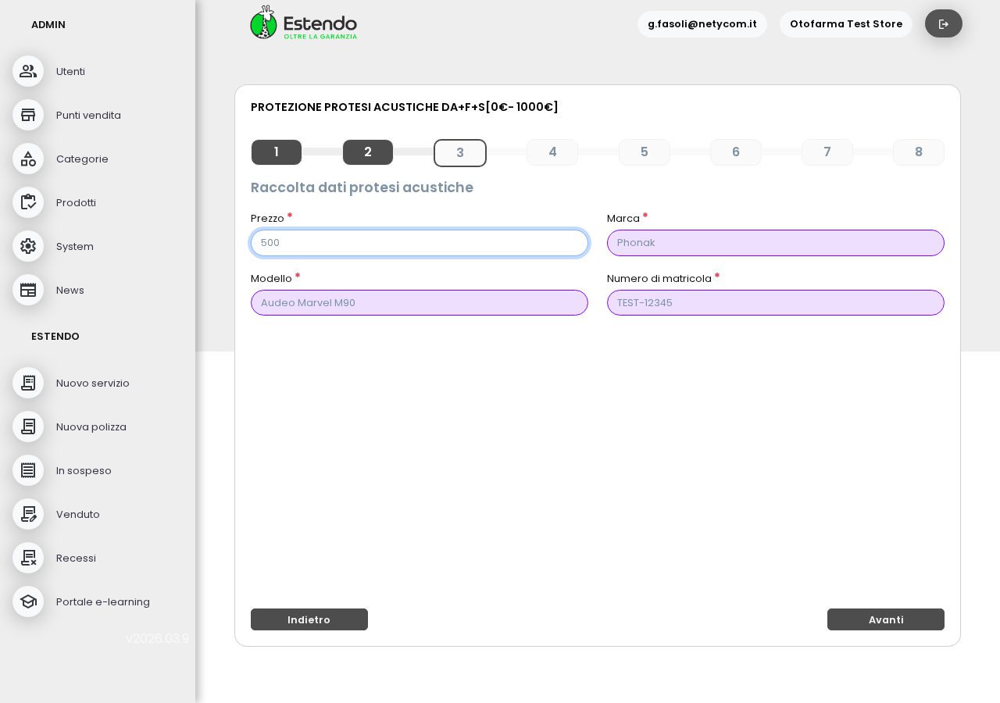
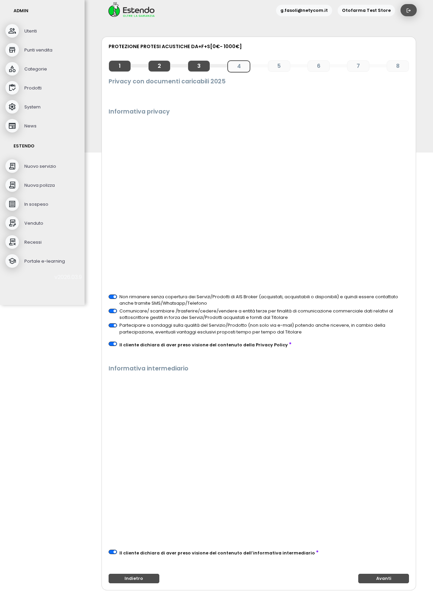
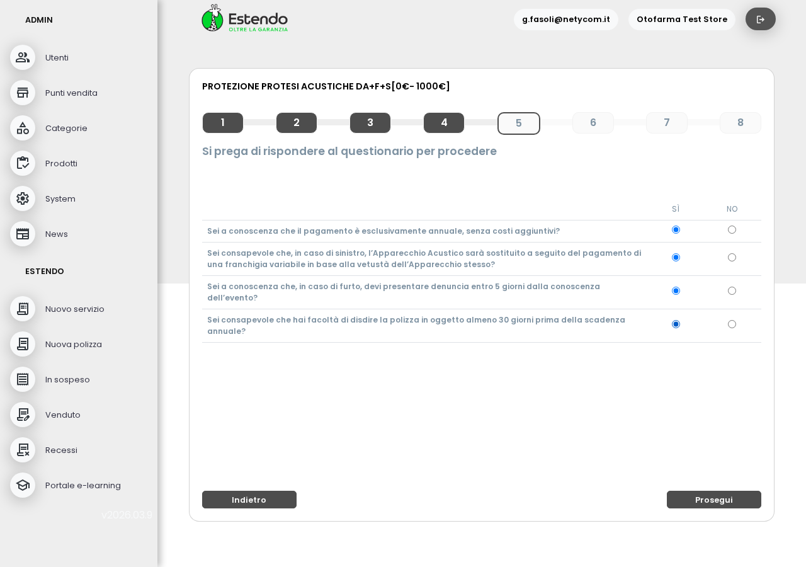
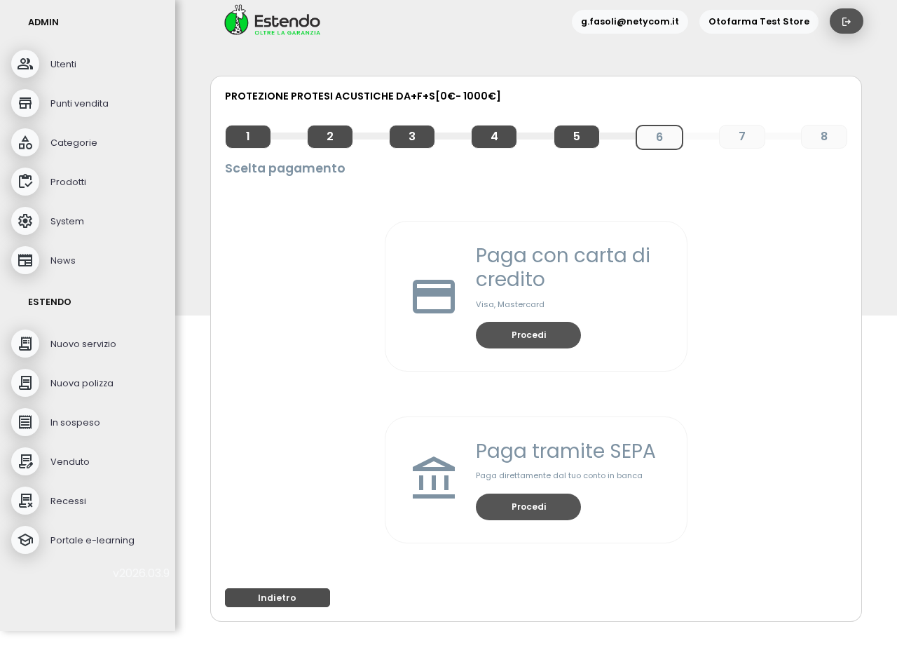
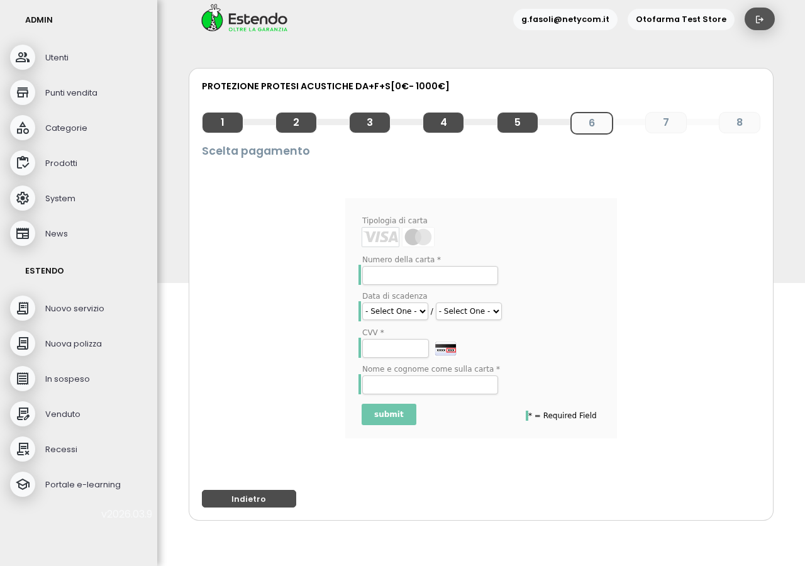

L'utente può selezionare un prodotto, compilare l'anagrafica, rispondere al questionario, scegliere il metodo di pagamento e arrivare alla pagina di inserimento carta. Il processo è completo in 6 passi.
FUNZIONANTEL'operatore accede alla piattaforma Otofarma. La dashboard mostra lo storico contratti (zero per ora, è una piattaforma nuova). Dal menu laterale sono accessibili tutte le funzioni.

L'operatore avvia un nuovo contratto e vede il catalogo prodotti disponibili. Sono presenti 5 tipologie di Protezione Protesi Acustiche, filtrabili per valore del bene, durata e tipologia di rimborso.

Dopo la selezione, il sistema mostra un riepilogo del prodotto scelto con importo, date di copertura e attestato generato dalla piattaforma Otofarma.

Il modulo raccoglie i dati personali del cliente: nome, cognome, codice fiscale, data di nascita, indirizzo, città e provincia. Tutti i campi sono validati prima di procedere.

Il sistema richiede i dati specifici del bene assicurato: marca, modello e numero seriale della protesi acustica. Il prezzo del bene viene inserito e verificato rispetto alla fascia del prodotto selezionato.

Il cliente prende visione dell'informativa privacy e dell'informativa intermediario. I consensi obbligatori vengono raccolti prima di procedere al questionario.

Il sistema pone 4 domande di comprensione sul prodotto acquistato (rinnovo automatico, modalità di pagamento, gestione sinistri). Il cliente risponde prima di procedere al pagamento.

Il cliente può scegliere tra carta di credito (addebito immediato) o addebito diretto SEPA. Entrambe le opzioni sono disponibili e configurate.

Selezionata la carta di credito, il sistema carica correttamente la pagina sicura per l'inserimento dei dati della carta (gestita da Zuora/Stripe). Il test è stato interrotto qui — nessun pagamento reale è stato effettuato.

-15 ESTENDO_API_KEY, ESTENDO_API_PASSWORD non configurate
→ contratti non verranno registrati in Estendo alla finalizzazione
-5 Store name "Otofarma Test Store" (da rinominare in produzione)/contract/select → selezione prodotto (5 disponibili)
/contract/start/{id} → redirect a /contract/{cid}/step/1
/contract/{id}/step/2 → anagrafica (Livewire wire:model.live)
/contract/{id}/step/3 → dati protesi (deviceBrand/Model/Serial/Price)
/contract/{id}/step/4 → privacy e consensi (5 checkbox)
/contract/{id}/step/5 → questionario (4 radio yes/no)
/contract/{id}/step/6 → scelta pagamento (wire:click payWith('credit-card'))
→ Zuora hosted page (iframe CC o SEPA)ESTENDO_API_KEY= (vuoto — da richiedere a Estendo) ESTENDO_API_PASSWORD= (vuoto — da richiedere a Estendo) ESTENDO_API_USER=otofarma (presente)
- Login via /radar-login/{userId} (bypass reCAPTCHA)
- Avanti button: <a wire:click="nextStep()"> — non un <button>
- Step 6 proceed: wire:click="payWith('credit-card')" / payWith('sepa')
- Input senza name/id → wire:model.live="campo" come selettore
- reCAPTCHA: temporaneamente sostituiti con Google test keys durante test
poi ripristinati: 6Lf5STcqAAAA...